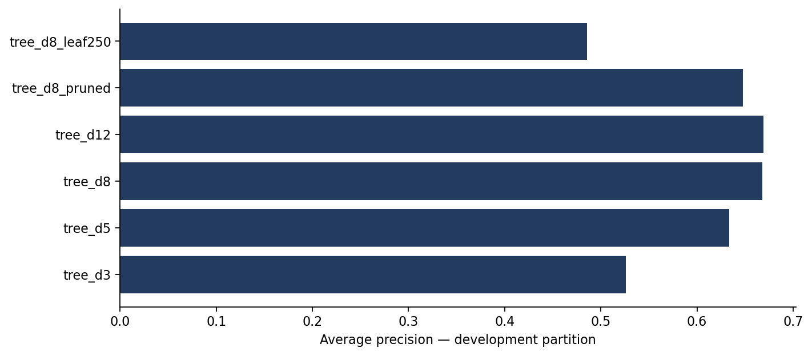
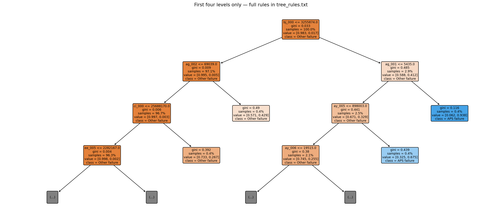
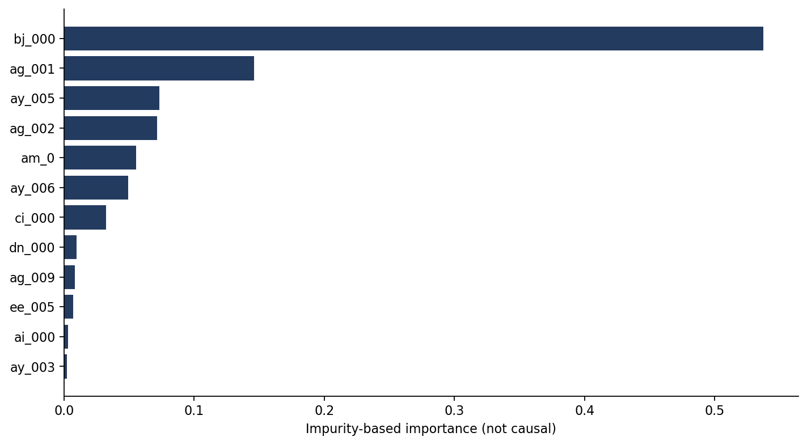
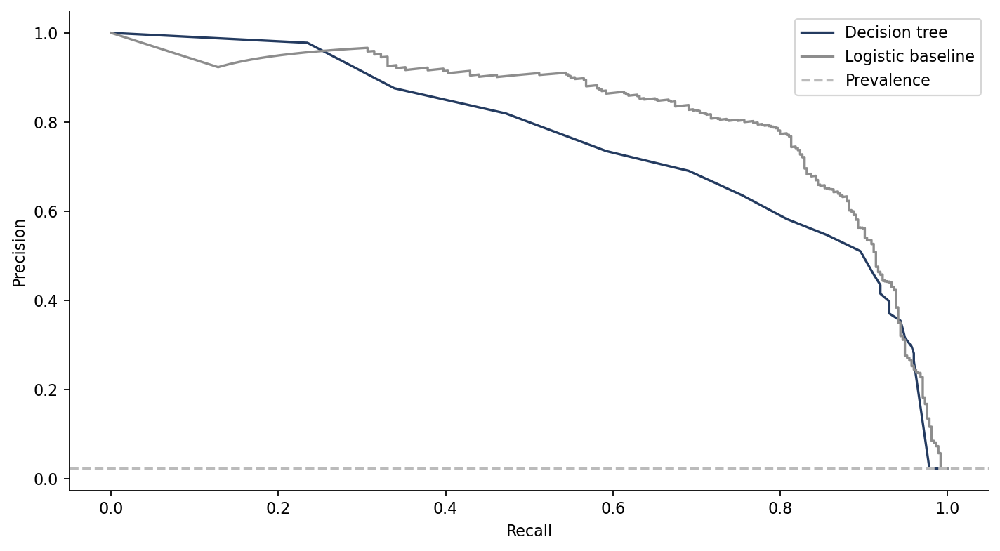
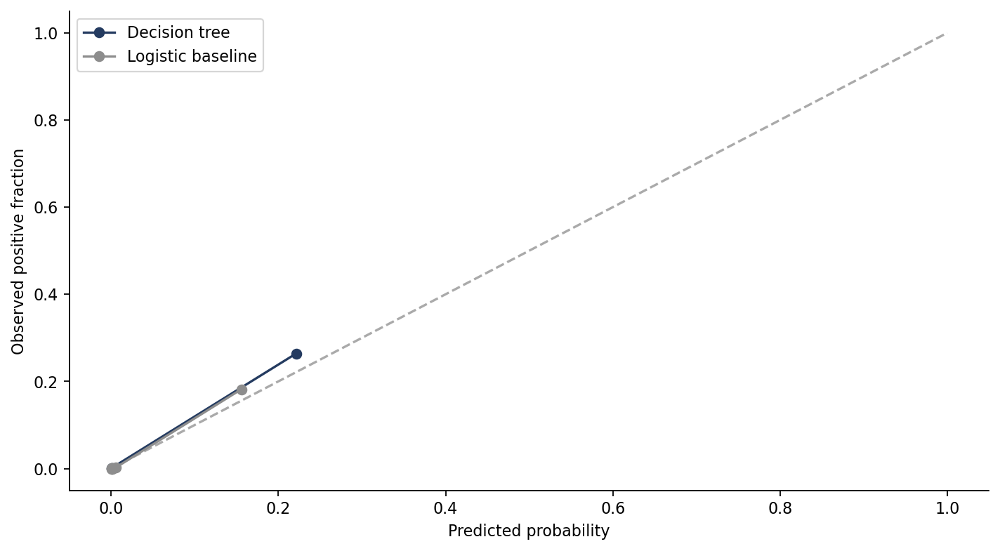
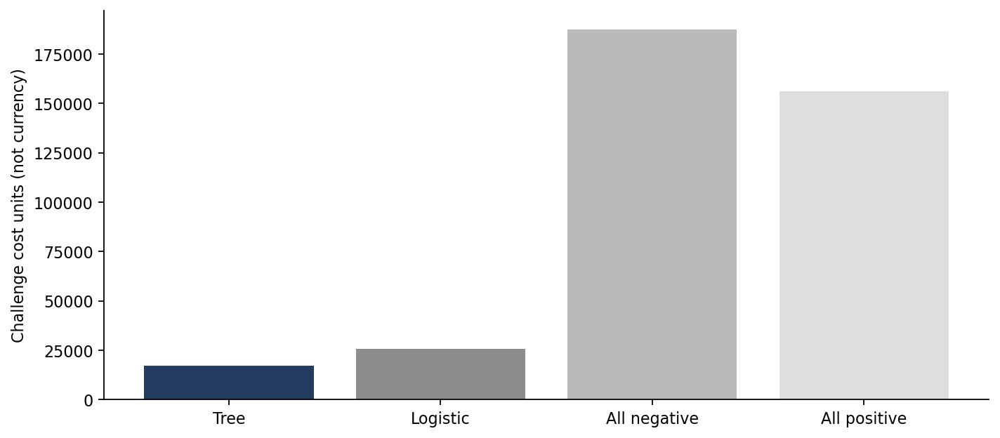

01 / BUSINESS UNDERSTANDING
Triagem com custos diferentes para cada erro
Quando uma equipe precisa investigar registros de falha, deixar passar um problema APS pode ter peso maior que gerar um falso alerta. A base distingue falha de um componente específico do APS de falhas em outros componentes. A classe negativa não representa caminhões saudáveis. O case trata de diagnóstico histórico, sem horizonte de previsão de falha futura.
Critério do desafio: falso positivo custa 10 unidades; falso negativo, 500. Esses pesos não são moeda nem uma estimativa de custo real da operação.
02 / DATA UNDERSTANDING & PREPARATION
Dados reais e limites de disponibilidade
60.000 registros no treino oficial, com 1.000 positivos; 16.000 no teste oficial, com 375 positivos. São 170 atributos anonimizados. Ausentes são tratados por mediana e indicadores, aprendidos apenas no treino. Não há identificadores de veículo ou calendário global: não podemos comprovar separação por caminhão ou validação temporal. Disponibilidade operacional dos atributos também não foi verificada.
03 / MODELING
Árvore individual, seleção e congelamento
Seis árvores individuais, comparando profundidade, poda por complexidade e tamanho mínimo da folha. Seleção por AP no desenvolvimento: tree_d12, com profundidade 12 e 23 folhas. Do treino oficial: 36.000 para ajuste, 9.000 para desenvolvimento, 9.000 para calibração sigmoid e 6.000 para política. O limiar minimiza FP×10 + FN×500 na política; tudo é congelado antes do teste oficial.

Como a árvore decide
O gráfico mostra apenas os quatro primeiros níveis da árvore. As regras completas estão no repositório. Nomes como aa_000 são anonimizados, sem interpretação física publicada: os limiares não são descritos como limites de pressão ou desgaste. As proporções nas folhas são brutas de treino; o app apresenta probabilidades calibradas. Importância por redução de impureza não é efeito causal.


04 / EVALUATION
Resultado no teste oficial reservado
A logística teve melhor ranking (AP 0.818) e menor Brier. A árvore identificou 356 de 375 falhas APS, perdeu 19 e gerou 768 falsos alertas. Com as políticas congeladas, seu custo no desafio foi 33.6% menor que o da logística. O resultado não demonstra superioridade geral do algoritmo nem economia real.
| Modelo | AP | ROC AUC | Brier ↓ | Recall | Precision | Custo |
|---|---|---|---|---|---|---|
| Árvore de decisão | 0.730 | 0.963 | 0.0106 | 94.9% | 31.7% | 17,180 |
| Logistic baseline | 0.818 | 0.982 | 0.0086 | 87.2% | 63.7% | 25,860 |
Teste: 16.000 registros; prevalência APS 2,34%. Sem intervalos de confiança. AP = average precision.



Limiar congelado: 0.0154; registros sinalizados: 7.0%. Sempre negativo custa 187.500 e sempre positivo 156.250 unidades neste teste.
05 / HISTORICAL CAPACITY SCENARIO
Capacidade de investigação
Ranking histórico separado do limiar congelado. Árvores produzem empates: desempate pela ordem original da fonte, sem consultar o alvo. Não é garantia de desempenho em uma operação real.
06 / LIMITATIONS & NEXT STEPS
Limites e próximo passo
Uma separação e uma sequência de sementes, sem intervalos de confiança. Veículos podem se repetir entre registros e não há ID para auditar isso. A prevalência muda entre treino e teste. Empates de score nos cenários são resolvidos pela ordem da fonte, podendo alterar a composição da fila. Não há eficácia operacional ou economia demonstradas. Antes de um piloto: validar disponibilidade, independência dos veículos, estabilidade, calibração, custo real e impactos com especialistas.
Notebook ↗Model card ↗